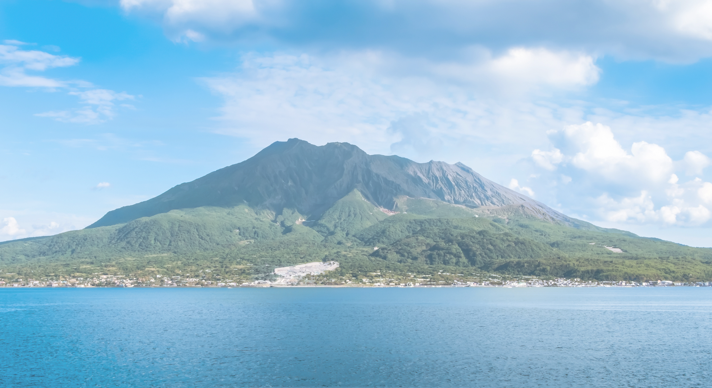

健康食品の製造・販売
にんにく卵黄、熟成酢、黒糖シロップ、げたんはなど、鹿児島の素材を活かした健康食品の企画・製造・販売を行っています。
明治40年の創業から、
鹿児島の素材と
向き合い続けてきた
私たちの会社情報を
ご紹介します。
基本情報・所在地・連絡先などをご確認いただけます。
| 社名（商号） | 株式会社 渕脇殖産 |
|---|---|
| 創業年 | 明治40年（1907年） |
| 設立年月日 | 昭和47年10月5日 |
| 資本金 | 1,000万円 |
| 住所 | 〒890-0034 鹿児島県鹿児島市田上2-5-1 |
| 電話 | 099-250-7623 |
| FAX | 099-250-7626 |
| 代表メール | info@fuchiwaki.jp |
地域とともに歩んできた足跡です。
1907年
木材問屋 創業
1972年
株式会社 渕脇殖産開設
1998年
通信販売 開始 （健康補助食品 DHA入りにんにく卵黄販売開始）
2001年
本社移転 鹿児島市東開町から現在の鹿児島市田上へ
2016年
就労移行福祉事業所「リバーサル鹿児島」を鹿児島市天文館にて開所
現在に至る
商品についてのご相談やお取引のご提案を承ります。
電話、FAX、メールにてお気軽にお問い合わせください。担当スタッフが丁寧に対応いたします。